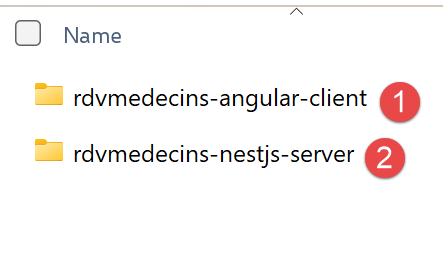
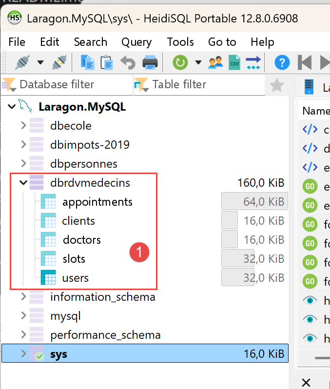
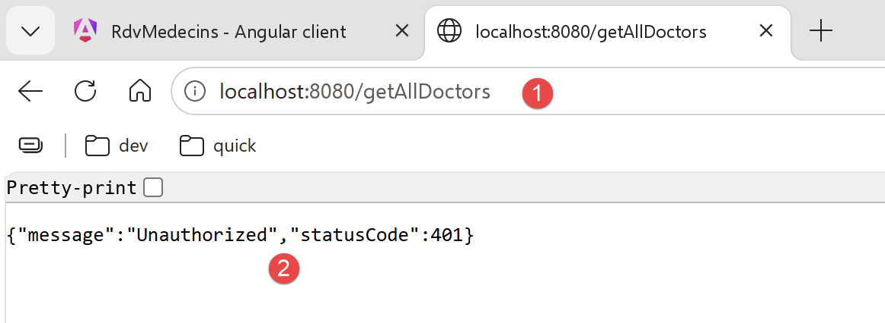
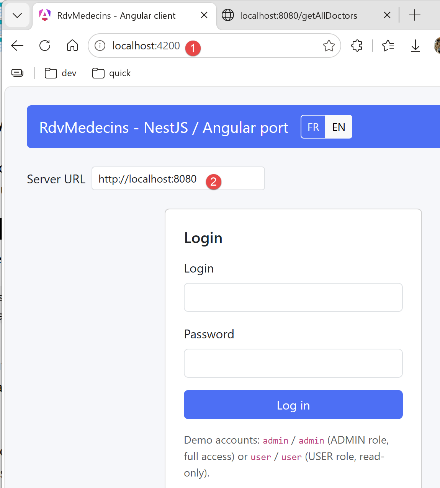

2. 第 1 章 - 搭建工作环境
2.1. 安装工具
- Node.js：从 nodejs.org 下载并安装 22 版（或更高版本）。在终端中验证安装：
- Visual Studio Code （VSCode）：可从 code.visualstudio.com 免费下载。安装“TypeScript and JavaScript Language Features”扩展（通常已内置）。
- [NestJS] 的 CLI 和 [Angular] 的 CLI——这两个命令行工具只需一次性安装。在 VSCode 的终端中：
- [MySQL] 8：例如可使用 XAMPP、Laragon（在 Windows 上）安装，或直接使用 [MySQL] Community Server 安装。图形化管理工具（phpMyAdmin、[MySQL] Workbench、DBeaver、HeidiSQL……）可使后续工作更轻松。此后将使用 Laragon 工具。
- Postman：可从 postman.com 免费下载。
如果您已下载了代码，它位于两个文件夹中：

- [1] 中是 [Angular] 客户端；
- [2] 中是 [NestJS] 服务器；
用 Visual Studio 打开 [2] 文件夹 [File / Open Folder]：

2.2. 创建数据库
为了创建 [NestJS] 服务器使用的 [MySQL] 数据库，我们将使用 Laragon 工具。截至 2026 年 9 月，Laragon 可在 URL [Download Laragon – Fast & Modern Dev Environment ] 获取。Laragon 包含的工具可用于安装 PHP 服务器以及 DBMS 和 [MySQL] 服务器：

- [1] 中是 Apache Web 服务器；
- [2] 中是 DBMS [MySQL]；
- [3] 中是一个我们不会使用的邮件工具；
- [4] 启动所有服务（Apache、[MySQL]、MailPit）；
- [5] 显示 URL [http://localhost] 的网页。默认情况下，该 URL 指向 <laragon-install>\www 文件夹，其中 <laragon-install> 是 Laragon 的安装文件夹；
- [6] 中启动 HeidiSQL 工具，用于管理 MySQL 数据库。我们将用该工具创建 [NestJS] 服务器使用的数据库；
- 在 [7] 中打开终端；Laragon 所需的所有二进制文件都在 PATH 中；
- 在 [8] 中打开 Windows 资源管理器，定位到与 URL [http://localhost] 关联的文件夹；
Laragon 的安装文件夹包含以下内容：
 |
- 在 [1] 中，[bin] 文件夹包含许多应用程序：
 |
- 在 [1] 中，Apache Web 服务器；
- 在 [2] 中，命令行终端；
- 在 [3] 中，[git] 客户端，用于管理项目的不同版本；
- 在 [4] 中，数据库管理器；
- [5] 是邮件管理器；
- [6] 是 DBMS [MySQL]；
- [7] 是另一个 Web 服务器；
- 在 [8] 中，[node.js] 用于运行 JavaScript 脚本；
- [9] 是文本编辑器；
- 在 [10] 中，PHP 解释器；
- [11] 是 [Python] 解释器；
- [12] 是缓存服务器；
Laragon 自带一套完整的开发环境。在本课程中，我们只使用 DBMS [MySQL] [6] 和 [heidisql]（用于图形化管理）；
要创建 [NestJS] 服务器所需的 [MySQL] 数据库，请按以下步骤操作：
 |
- 在 [1] 中，必须启动所有服务；
- 在 [2] 中，[Database] 选项用于管理数据库；
选项 [Database] 会启动一个名为 HeidiSQL 的工具：
 |
- 在 [1] 中，可以选择各种 DBMS 选项。默认提供的是 DBMS MySQL，这样就可以；
- 在 [2] 中，登录 HeidiSQL；
 |  |
- 在 [1-2] 中，运行 SQL 文件，然后选择 [dbrdvmedecins.sql] 文件，您可以在 [rdvmedecins-nestjs-server/database] 文件夹中找到它：

运行 [3] 文件将创建 [NestJS] 服务器使用的数据库 [dbrdvmedecins]。要查看它，请在 HeidiSQL 中按 F5 刷新显示：

数据库 [dbrdvmedecins] 已创建。您可以查看其内容：

- 在 [1-3] 中，是表 [clients]；
- [id] 是表的主键；
- [version] 是行的版本号。每次修改该行时，此编号都会递增；
- [title, last_name, first_name] 标识该人员；

- 在 [1-3] 中，是表 [doctors]；
- [id] 是表的主键；
- [version] 是行的版本号；
- [title, last_name, first_name] 标识该人员；

- 在 [1-3] 中，是医生预约时间段表 [slots]：
- [id]：主键；
- [version]：行的版本号；
- [doctor_id]：外键，引用医生的主键；
- [start_hour, start_minute]：预约开始时间的小时和分钟。因此 [8,20] 表示上午 8:20。
- [end_hour, end_minute]：就诊结束时间的小时和分钟。

- 在 [1-3] 中，是已预约的预约表 [appointments]；
- [id]：主键；
- [version]：版本号；
- [day]：预约日期；
- [slot_id]：外键，引用预约时间段的主键。由于时间段与某位医生关联，因此我们可以知道这次预约由哪位医生负责；
- [client_id]：外键，指向前来就诊的患者的编号（主键）；

- 在 [1-3] 中，是表 [users]，其中列出了获准使用 [NestJS] 应用的用户；
- [id, version]：主键、版本号；
- [login, password]：用户凭据；
- [name]：用户名称；
- [role]：用户的角色。[ADMIN] 拥有完全访问权限。[USER] 拥有只读访问权限。该用户可以查看医生的日程，但不能预约或取消预约；
2.3. 首次启动 [NestJS] 服务器
在 [rdvmedecins-nestjs-server] 文件夹中，在终端中输入以下命令：
[.env] 文件用于设置环境变量：
请根据您的 [MySQL] 安装情况（用户名、密码、端口）修改新创建的 .env 文件。由于已添加身份验证（见第 3 章），该文件还包含一个密钥 JWT_SECRET：示例值适合跟随本文档学习，但在任何实际使用之前，必须替换为您自己专属的随机字符串。
然后启动服务器：
控制台依次显示：[NestJS] 模块的启动、控制器公开的路由列表（RdvMedecinsController，然后是 AuthController 及其 /login 路由），最后是启动确认信息：
该控制台输出确认服务器确实在监听 8080 端口——与原始文档中的 Spring Boot 服务器完全相同的端口，选择这个端口正是出于这一原因。
2.4. 用浏览器测试服务器
由于已添加身份验证（第 3 章），RdvMedecinsController 中的所有路由都需要有效的 JWT 令牌：因此，不能再仅用浏览器直接测试它们。例如：
现在在没有令牌的情况下会返回 401 Unauthorized 错误：

这是预期的行为：该响应确认服务器正在正确地保护其路由。需要使用 Postman（下一节）来获取令牌，然后再使用它。
2.5. 用 Postman 测试 [NestJS] 服务器
Postman 工具可从 URL [https://www.postman.com/downloads/] 获取。您可能需要创建一个账户。
启动所有 Laragon 服务，然后打开 Postman 桌面应用：
 |  |
- 在 [1-2] 中，创建一个 HTTP 请求，用于查询医生预约管理服务器；
2.5.1. 登录并获取令牌
- 新建一个 Postman 请求，方法为 POST，URL 为 http://localhost:8080/login；
- 在 [Body] 选项卡中，选择 “raw”，然后选择 JSON 格式，并输入：{"login": "admin", "password": "admin"}（或使用“user/user”测试 USER 角色）；
- 提交请求。

- 在 [1-2] 中，是发往运行于 8080 端口的 [NestJS] 服务器的 POST 请求；
- 在 [3-5] 中，是请求的主体。它向服务器传送包含尝试登录的用户凭据的 JSON 字符串，此处为 admin/admin；
- 在 [6] 中，是服务器的响应；
- 在 [7] 中，是身份验证令牌，后续请求必须把它发送给服务器，以表明“我已经通过身份验证”；
复制 accessToken 的值：这就是此后每个请求都必须携带的令牌。在上面的示例中，要复制的令牌是“eyJ...zoM”（不含引号）。
2.5.2. 使用令牌调用受保护的路由
对于 GET /getAllDoctors （或以 RdvMedecinsController 开头的任何其他路由），在 Postman 的 Authorization 选项卡中，选择 Bearer Token 类型并粘贴上面复制的令牌（Postman 随后会自动添加 Authorization: Bearer <token> 标头）。

- 在 [1-2] 中，是发送给服务器的请求。它请求数据库中的医生列表；
- 在 [3-5] 中，请求必须包含身份验证令牌。在 [4] 中选择 [Bearer Token]，在 [5] 中粘贴您之前复制的身份验证令牌；
- 在 [7] 中，是服务器的响应；
2.5.3. 测试 POST 路由（/addAppointment、/deleteAppointment）
按照上述相同的步骤操作（方法 POST、JSON 主体、Bearer Token），就像原始文档对同样的路由使用 Chrome 扩展“Advanced Rest [Client]”一样。
注意：您可以在集合 [rdvmedecins-nestJS.postman_collection.json] 中找到以下 Postman 请求：

在 Postman 中，按 Ctrl-0 加载集合：

- 点击 [1] 加载集合并选择集合文件。集合加载后，会显示其中的请求：

要测试 /addAppointment ，请使用 ADMIN 账户的令牌：
- Postman 请求，方法为 POST，URL 为 http://localhost:8080/addAppointment；
- Authorization 选项卡：Bearer Token，管理员令牌；
- [Body] 选项卡，raw，JSON：{"day": "2026-09-13", "clientId": 1, "slotId": 5}；
- 发送请求。

您可以用 HeidiSQL 验证数据库中已添加了一条预约：

要测试 /deleteAppointment，请按相同的步骤操作，请求主体为 {"appointmentId": 2}（即上面要取消的预约的 ID（8））。

- 在 [4] 中，上面的编号即为要删除的预约；

- 在 [5-7] 中，是身份验证令牌；
- 在 [9] 中，是服务器的响应。[status=0] 表示操作成功。您可以用 HeidiSQL 验证：

- 在 [3] 中，2 号预约已不存在；
试一试：用 USER 账户（user/user）的令牌代替 admin 令牌，重复同样的 /addAppointment 请求：响应将变为 403 Forbidden，并附带消息“role [USER] does not allow this action (required role: ADMIN)”——这具体演示了第 3 章中实现的基于角色的访问控制。
2.6. 首次启动 [Angular] 客户端
在 rdvmedecins-angular-client 文件夹中（必须先运行 [NestJS] 服务器）：
然后在浏览器中打开 http://localhost:4200 ：首先出现的是登录界面（见第 5 章）。

- 在 [1] 中，是提供 [Angular] 应用的 URL 服务器；
- [2] 是管理数据库 [rdvmedecins] 的 [NestJS] 服务器的 URL；
需要理解的是，这里有两个 Web 服务器，其中一个充当另一个的客户端。
右上角标有“FR”和“EN”的两个按钮，允许您在登录之前就将界面切换为法语。使用两个演示账户之一（admin/admin，完全访问；或 user/user，只读）登录，即可访问应用的其余部分。第 5 章提供了该客户端的详细使用指南，每一步都配有截图。